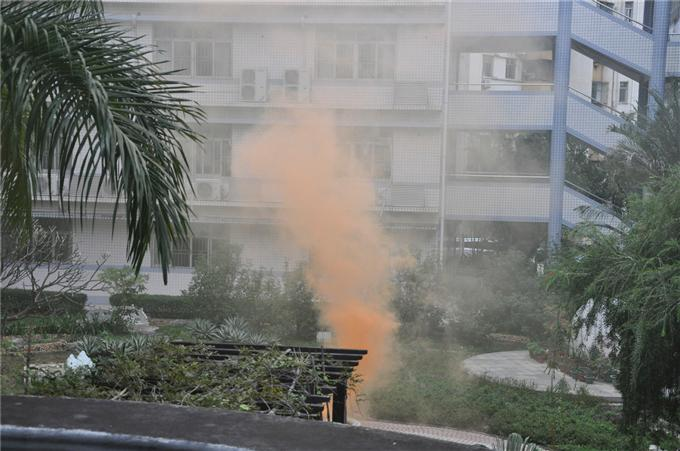
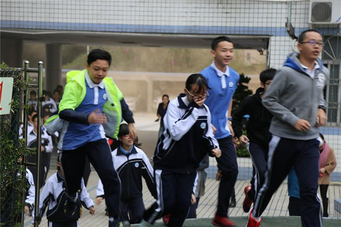
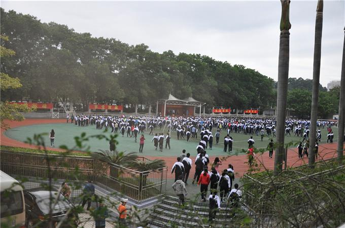
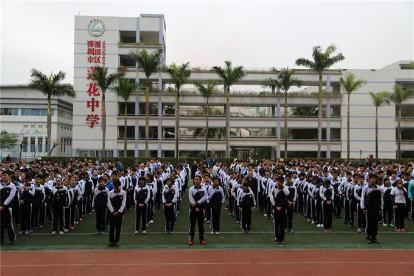
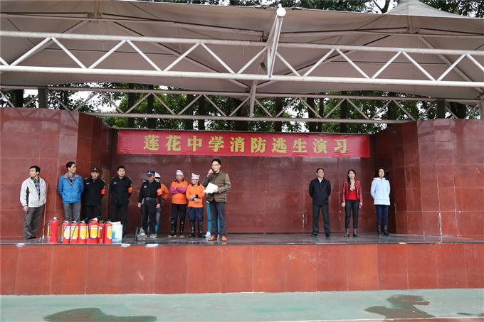
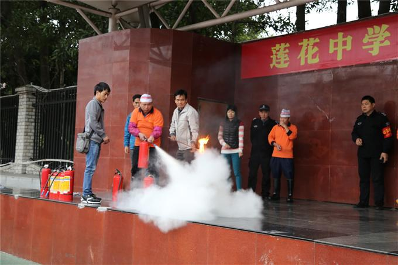
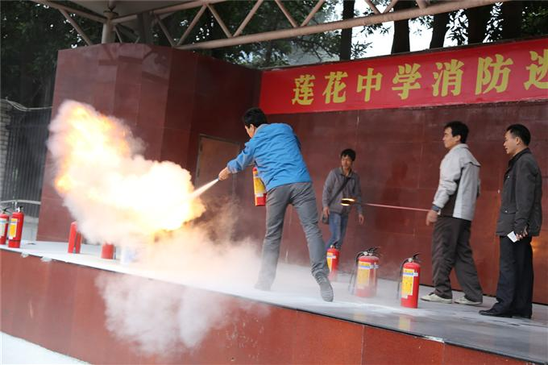
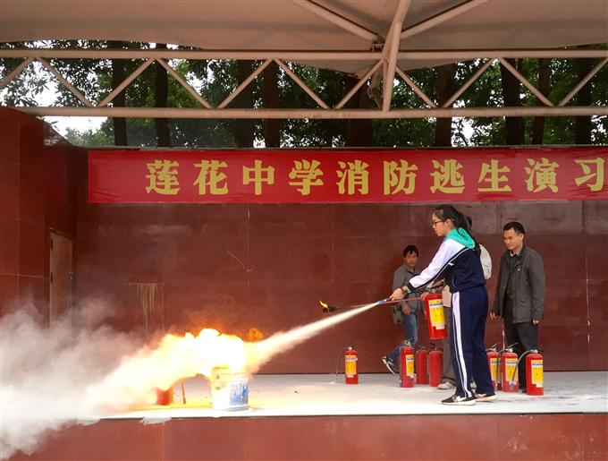
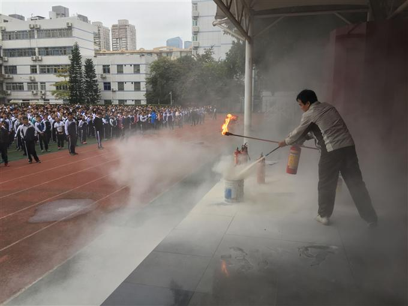
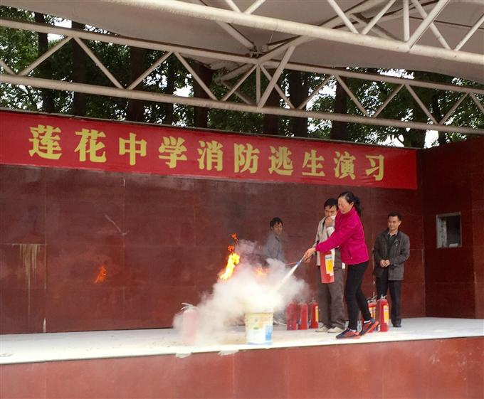

学校安全事关社会稳定，事关每个家庭的幸福与安宁。做好消防安全工作是促进学校健康、稳定发展的关键，是保障全体师生生命与学校财产安全的重要环节。本着坚持“安全第一，预防为主”的方针和“以人为本”的思想，为增强师生的消防安全意识，普及消防安全知识，进一步提高师生自防自救的能力，12月28日早上，我校安全处组织全校师生进行了一次消防疏散逃生演练活动。
上午7：50分，随着烟幕弹燃烧,急促的火灾警报声响起，教师们按照演练前的安排,在各楼梯口负责指挥。同学们在班主任的带领下，用衣服捂住鼻子，迅速有序地按照疏散路线从各楼梯通道逃出教学楼，撤离到学校操场的安全地带，排队集合，整个场面秩序井然，全校约2千名师生从全校各个楼层、各个角落到操场集合完毕共用时3分44秒。接着消防人员讲解怎样正确使用灭火器，并组织部分师生员工现场操作。随后安全处主任匡国华老师就本次疏散演练进行了总结，同时进行了火灾逃生技巧和中学生如何应对被绑架的对策教育。
消防疏散逃生演练是学校安全工作的一部分，是让师生们能够掌握逃生、自救、互救的基本方法。这次演练，不仅提高了全体师生的安全意识和自救防范能力，更有效地锻炼了同学们在紧急情况下的快速反应能力，做到在发生灾害时，能临危不乱，有序、迅速地按照消防逃生路线安全疏散，确保生命安全和学校的消防安全。演练增强了师生的灾害逃生能力，培养了学生的团队协作精神，为切实保障师生的在校安全提供了有力地保障，同时也为今后的应急处理积累了宝贵的经验。
